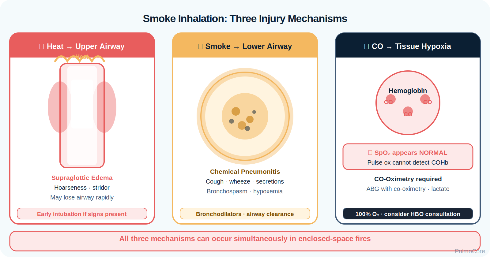
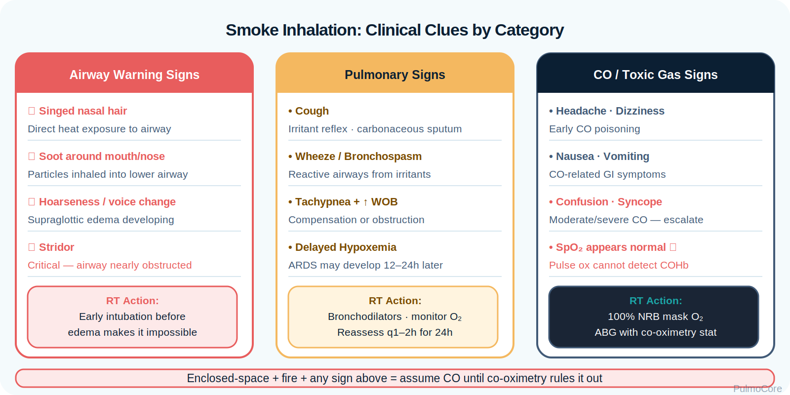
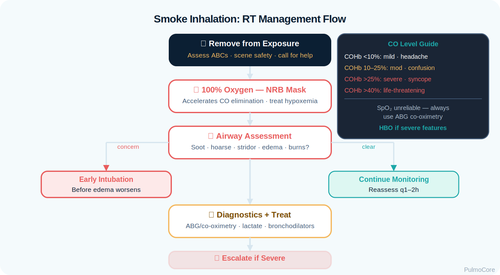

RT Clinical Connection
For RTs, the key is to treat the exposure as an airway-and-oxygen-delivery problem. Normal SpO₂ does not exclude carbon monoxide intoxication, and mild early hoarseness can become dangerous airway edema.
Smoke inhalation injuries combine airway burns, toxic gas exposure, chemical irritation, and impaired oxygen delivery. This module focuses on RT-level recognition, oxygenation priorities, airway escalation, CO poisoning traps, diagnostics, and board-style decision-making.
By the end of this module, learners should be able to connect fire exposure history, airway findings, toxic gas physiology, diagnostic interpretation, oxygen therapy, and escalation decisions.
Watch this quick overview before moving into the disease snapshot.
Smoke inhalation is a high-risk respiratory emergency because the patient may initially look stable and then develop airway edema, bronchospasm, hypoxemia, or toxic cellular hypoxia. In enclosed-space fires, carbon monoxide and cyanide must be considered early.
For RTs, the key is to treat the exposure as an airway-and-oxygen-delivery problem. Normal SpO₂ does not exclude carbon monoxide intoxication, and mild early hoarseness can become dangerous airway edema.
Immediately associate smoke inhalation with 100% oxygen, co-oximetry, airway edema risk, COHb interpretation, possible cyanide toxicity, and early intubation when upper-airway obstruction is likely.
A patient rescued from an enclosed-space fire has headache, confusion, soot around the mouth, and SpO₂ 99% on room air. Which interpretation is best?
Fire-related inhalation injury has three high-yield mechanisms: heat injures the upper airway, smoke chemicals injure lower airways and alveoli, and toxic gases impair oxygen delivery or cellular oxygen use.

| Mechanism | What Happens | Why It Matters |
|---|---|---|
| Thermal upper-airway injury | Heat causes edema above the glottis. | Can progress to obstruction; early airway protection may be safer than waiting. |
| Lower-airway chemical injury | Irritant gases and particles inflame bronchi and alveoli. | Causes cough, wheeze, bronchospasm, secretions, and hypoxemia. |
| Carbon monoxide binding | CO binds hemoglobin and reduces oxygen carriage. | Creates tissue hypoxia despite potentially normal PaO₂ and SpO₂. |
| Left shift | Remaining hemoglobin holds oxygen more tightly. | Oxygen unloading to tissues worsens. |
| Cyanide toxicity | Cells cannot use oxygen effectively. | Shock, altered mental status, and high lactate may occur. |
Hoarseness, stridor, drooling, progressive swelling, facial/neck burns, or soot in the airway should raise concern that intubation may become harder if delayed.
Click each hotspot to reveal the RT significance of that injury location.
Risk increases with enclosed-space fires, prolonged exposure, loss of consciousness, burns to the face or neck, synthetic material combustion, and delayed removal from the source.
| Exposure Clue | Concern | RT Focus |
|---|---|---|
| Enclosed-space fire | CO and cyanide accumulation | High-concentration oxygen and co-oximetry. |
| Soot in mouth or sputum | Airway exposure | Assess airway patency and secretion burden. |
| Hoarseness or stridor | Upper-airway edema | Escalate for airway protection. |
| Wheezing after smoke | Bronchospasm/lower-airway irritation | Bronchodilator assessment and response monitoring. |
| Confusion or syncope | CO, cyanide, hypoxemia, or shock | Do not trust SpO₂ alone. |
Choose the best category for each item, then check your answers.
Presentation may include airway symptoms, pulmonary symptoms, neurologic symptoms from CO/cyanide, and burn-associated distress. The RT should reassess frequently because deterioration may be delayed.

| Finding Type | What the RT May See |
|---|---|
| Upper airway | Facial burns, singed nasal hair, soot, hoarseness, stridor, dysphagia, swelling. |
| Lower airway | Cough, wheeze, crackles, bronchospasm, carbonaceous sputum, increased secretions. |
| Oxygen delivery | Headache, dizziness, nausea, confusion, syncope, chest pain, normal-looking SpO₂ with CO exposure. |
| Ventilation | Tachypnea, accessory muscle use, fatigue, hypercapnia if failure develops. |
| Delayed lung injury | Increasing oxygen need, worsening CXR, pulmonary edema, ARDS pattern. |
Do not wait for dramatic swelling before escalating airway concerns. A patient with soot, hoarseness, or stridor can become difficult to intubate as edema progresses.
Diagnostics should answer four questions: Is the airway safe? Is oxygen delivery impaired by CO? Is there cellular hypoxia from cyanide? Is lower-airway/lung injury evolving?
| Test | High-Yield Interpretation |
|---|---|
| Pulse oximetry | May be falsely normal in CO poisoning; do not use it alone to rule out hypoxia. |
| ABG with co-oximetry | Measures PaO₂, pH, PaCO₂, COHb, and other hemoglobin species. |
| COHb level | Confirms exposure but may fall after oxygen; symptoms and exposure history matter. |
| Lactate/metabolic acidosis | Severe lactic acidosis after enclosed fire raises concern for cyanide toxicity or shock. |
| Chest x-ray | May initially be normal; repeat if oxygen need or symptoms worsen. |
| Bronchoscopy | Can identify soot, edema, erythema, ulceration, and lower-airway injury severity. |
PaO₂ reflects dissolved oxygen in plasma, not how much hemoglobin is available to carry oxygen. In CO poisoning, PaO₂ may be normal while oxygen content and tissue delivery are dangerously reduced.
COHb levels help frame severity, but symptoms, exposure history, pregnancy, cardiac disease, neurologic changes, and treatment already given matter. Do not delay oxygen while waiting for a number.
A fire victim has headache and confusion after being found in an enclosed garage. SpO₂ is 100% on room air. What should the RT conclude?
The most important question is whether this patient is about to lose the airway, fail ventilation, or suffer severe tissue hypoxia despite reassuring numbers.
| Red Flag | Why It Matters |
|---|---|
| Stridor, hoarseness, drooling, progressive swelling | Possible upper-airway obstruction. |
| Soot in mouth/sputum or facial/neck burns | Suggests airway exposure and edema risk. |
| Altered mental status, syncope, seizure | Severe CO/cyanide toxicity or hypoxemia concern. |
| Chest pain, dysrhythmia, ischemic ECG changes | CO reduces oxygen delivery to the myocardium. |
| Severe lactic acidosis after enclosed-space fire | Raises concern for cyanide toxicity. |
| Increasing O₂ requirement hours later | Possible evolving chemical pneumonitis, edema, or ARDS. |
Management prioritizes removing the patient from exposure, giving high-concentration oxygen, protecting the airway early when indicated, treating bronchospasm, evaluating toxic gases, and monitoring for delayed lung injury.
| Intervention | Why It Helps |
|---|---|
| High-concentration oxygen | Accelerates CO elimination and improves oxygen delivery. |
| Early airway protection | Prevents loss of airway if edema is progressing. |
| Bronchodilators | Treat smoke-triggered bronchospasm and wheezing. |
| Humidification/airway clearance as ordered | Supports secretion management when soot and secretions are present. |
| Hyperbaric oxygen consultation | Considered for severe CO features depending on protocol. |
| Cyanide antidote pathway | Consider when severe lactic acidosis/shock follows enclosed-space fire. |

Select the steps in the best general order for a smoke inhalation patient with possible CO poisoning.
Severe smoke inhalation can progress to airway obstruction, respiratory failure, pulmonary edema, and ARDS. Ventilator support should protect the lungs while maintaining oxygenation and ventilation.
For smoke inhalation, early normal CXR or SpO₂ does not guarantee safety. Reassessment is part of treatment because airway edema and lung injury may evolve over time.
The RT is central to oxygen delivery, airway assessment, treatment delivery, ventilation support, monitoring, and escalation communication.
| RT Task | What to Assess or Do | Why It Matters |
|---|---|---|
| Assess airway | Voice, stridor, swelling, soot, burns, secretion burden. | Detects airway loss risk early. |
| Deliver oxygen | Use high-concentration oxygen for suspected CO exposure. | Reduces CO half-life and improves oxygen delivery. |
| Interpret data | ABG/co-oximetry, COHb, lactate, PaCO₂ trend, CXR changes. | Identifies toxic hypoxia and respiratory failure patterns. |
| Treat bronchospasm | Administer bronchodilators when wheezing/obstruction is present. | Improves airflow and work of breathing. |
| Escalate | Report red flags and prepare for advanced airway or ventilator support. | Prevents delayed response to deterioration. |
This guided case reveals one clinical stage at a time. Learners make an RT decision, receive feedback, and then continue to the next stage.
A 34-year-old is rescued from an apartment fire. They are coughing, confused, and have soot around the mouth.
Decision Question: What is the priority RT action?
The patient becomes more hoarse and develops mild inspiratory stridor. Facial burns are present.
Decision Question: What should the RT recommend?
ABG with co-oximetry shows pH 7.31, PaCO₂ 34 mm Hg, PaO₂ 210 mm Hg on high FiO₂, COHb 28%, and lactate 9 mmol/L.
Decision Question: How should these results be interpreted?
Six hours later, oxygen requirement increases. CXR now shows bilateral hazy opacities, and lung compliance is worsening.
Decision Question: Which concept is most important?
Answer each question to complete this activity. Answer choices shuffle each time the lesson opens.
Why can pulse oximetry be misleading in carbon monoxide poisoning?
Which finding most strongly suggests impending upper-airway obstruction after smoke exposure?
Which diagnostic test is most appropriate to confirm carbon monoxide exposure?
A patient from an enclosed-space fire has shock, altered mental status, and severe lactic acidosis. What additional toxic exposure should be considered?
In CO poisoning, standard SpO₂ can look normal because it cannot reliably distinguish oxyhemoglobin from carboxyhemoglobin. Oxygen is treatment, not just supportive care.
Thermal injury most often affects the upper airway because heat is dissipated before reaching distal airways, except with steam or extreme exposures.
Hoarseness after a fire may signal laryngeal edema. Progressive edema can make intubation more difficult if airway protection is delayed.
Yes. Lower-airway injury and pulmonary edema may evolve over hours, so clinical reassessment is essential.
Consider cyanide in enclosed-space fires, especially with shock, altered mental status, cardiovascular collapse, or severe lactic acidosis.
Remove exposure if not already done, deliver high-concentration oxygen, assess airway patency, and communicate red flags early.
Smoke inhalation injury is a combined airway, lung, and toxic oxygen-delivery problem. The RT must recognize that normal SpO₂ can be misleading, airway edema can progress, and delayed lung injury can develop after the initial event.
Terms are stored once and can power inline tooltips, glossary entries, and flashcards.
Click the card to flip it. Use Term → Definition or Definition → Term mode. Mark known cards to move them into the completed pile.